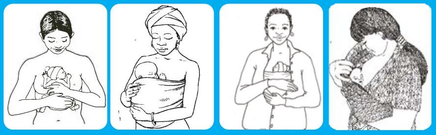

Core Neonatal Care & Procedures
8.0 NEONATAL RESUSCITATION
WARMTH AT DELIVERY
Preterm: To keep baby warm a dry cloth is not enough - must have external source of heat.
OPENING THE AIRWAY

VENTILATION
Infant ventilation bag (size 500 ml ), round face masks size 0 for preterm and 1 for term infant,
Fitting mask over face: Right size and Position of mask
Ventilating a neonate with bag and mask. Pull the jaw forward towards the mask with the hand holding the mask. Do not hyperextend the neck.
8.1 CHEST COMPRESSION
If chest compression is done then use a cycle of 1 breath per 3 cardiac compression
8.2 WHEN TO STOP RESUSCITATING
Consider stopping if after 20-30 minutes of effective resuscitation the baby:
- Has no spontaneous respiration or has an occasional gasp
- Pupils are dilated and fixed
- Heart rate is slow or absent
- Colour is not improving with bagging
Explain to the mother that the baby has died
POSTNATAL CARE - If resuscitation is successful see section Perinatal asphyxia
8.3 RESUSCITATION WITHIN NEWBORN UNIT
Follow the same sequence as the newly born.
9.0 EXAMINATION OF THE NEWBORN AND GESTATIONAL ASSESSMENT
9.1 HISTORY
Take an adequate history covering antenatal, perinatal and postnatal periods depending on the age of the baby, family & social history
9.2 PHYSICAL EXAMINATION
Minimise stress during the examination by avoidance of too much movement Keep baby warm throughout the examination. Remember warm clean hands & instruments Take advantage of what the baby is doing eg look in the mouth if crying, observe limbs if there are spontaneous movements etc Start with the lease stressful aspects and features that require a calm baby. Note: this it can be combined with clinical gestational assessment
Immediate neonatal period assessment- aims to:
- Establish that the baby is making appropriate transition to extrauterine life
- Detect congenital defects some of which need immediate/urgent care
- Establish baseline
The following order is suggested:
- Observation (without touching)
- Colour: pink, pallor, cyanosis
- Resting posture
- Respiration (can include most signs of SilvermanAnderson Score if baby has respiratory distress)
- Any spontaneous activity
- Obvious malformations
- Quiet examination (gentle touch minimal movement)
- Circulation
- Auscultation: Heart & lungs
- Palpation
- Fontanelles & sutures
- Abdomen
- Pulses
- Head to toe
- Colour-jaundice
- Hydration status (if not newly born)
- Nutrition status
- Skin
- Head & face
- Neck
- Chest including breasts
- Genitalia
- Anus
- Limbs - upper & lower
- Back
- Neonatal reflexes & head circumference
9.3 CLINICAL GESTATIONAL ASSESSMENT
Do a Ballard score & determine gestation; compare with maternal dates (see Appendix i)
At the end of the examination & gestational assessment:
- Make a diagnosis including a differential
- Classify as appropriate (AGA) small (SGA), large (LGA) for gestational age & specify if there is intrauterine growth restriction (IUGR) (see Appendix ii & iii)
- Plan management
10.0 THERMOREGULATION
10.1 INCUBATOR CARE
Incubator is an apparatus used to maintain a neutral thermal environment for preterm/low birth weight and very sick babies The incubator temperature should maintain the baby's skin temperature at $36.0-36.5^{\circ} \mathrm{C}$ or axillary/core temperature 36.5-37.4$^{\circ} \mathrm{C}$.
Indications for use:
- Care of preterm/low birth weight babies,
- Hypothermic neonate
- Sick neonates requiring close observation.
- To transport babies from one place to another. Isolation of newborn babies from infection, unfavorable external environment and stimulation.
Types:
- Transport incubators: used to shift the newborn from one area/place to another as needed. If not available other portable warm devices that use melted wax or other materials can be used.
- Closed type most of these are double walled
- Radiant warmers: (a) Resuscitaires (for short term use) or (b) intensive care type
Any of these incubators can be:
- Air mode: manually operated to maintain a constants air temperature
OR
- Skin servocontrol where the probe is attached to the baby's skin Servocontrol is an electronic feedback system which functions as a thermostat to maintain a constant temperature at the site of a thermistor probe by regulating the heat output of an incubator or radiant warmer
| Birth weight grams | DAYS AFTER DELIVERY (Temperature in degrees Celcius) | ||||||
|---|---|---|---|---|---|---|---|
| Birth | 2-5 | 6-10 | 11-15 | 16-20 | 21-25 | 26-30 | |
| <1000 | 35.5 | 35.0 | 35.0 | 34.5 | 34.0 | 33.5 | 33.0 |
| 1000-1500 | 35.0 | 34.0 | 33.5 | 33.5 | 33.0 | 32.5 | 32.5 |
| 1500-2000 | 34.0 | 33.0 | 32.5 | 32.0 | 32.0 | 32.0 | 32.0 |
| 2000-2500 | 33.5 | 32.5 | 32.0 | 31.0 | 31.0 | 31.0 | 31.0 |
| >2500 | 33.0 | 32.0 | 31.0 | 30.0 | 30.0 | 30.0 | 30.0 |
Note: A range is not given. For each temperature you can slightly go up or down according to the baby's response.
Procedure: Incubator
- Warm the incubator according to baby's needs.
- Explain the needs of incubator care to the parents of neonate.
- Place baby in the incubator or on radiant warmer.
- Baby can be naked but preferably lightly covered.
- All procedures and care should be through the port holes
- Avoid opening the doors as much as possible.
- Record baby's and incubator temperature 3 hourly
- Adjust the incubation parameters according to baby's needs (see table)
- If baby is not maintaining normal body temperature adjust the incubator temperature accordingly and report to the doctor.
- Monitor malfunction. NO ALARM SHOULD BE IGNORED.
Procedure - Servocontrol: Incubator or radiant warmer
- Place skin probe (see figure) secure firmly and protect the probe with a foil-backed shield
- Set baby's skin temperature at $36.5^{\circ} \mathrm{C}$
- Read the skin temperature from the temperature gauge on the heater unit
- When the abdominal skin temperature reaches the chosen set point, check the axillary temperature.
- The probe must be in solid contact with the skin at all times
- Record incubator air temperatures at same time as infant skin and axillary temperatures
- NEVER PUT THE PROBE IN THE AXILLA, OR BACK OF BABY if baby is supine
Placement of temperature skin probe and leads
If the baby cannot maintain body temperature:
- The environment is too cold or warm
- Baby is sick - usually sepsis
- The device is malfunctioning
WEANING BABIES OUT OF THE INCUBATOR
While in incubator practice intermittent kangaroo care for all stable babies BUT preferably transfer to a kangaroo room
Babies that are stable, gaining weight and over 1500 g can be transferred to cot care
ROOM USED FOR INCUBATORS
- Room temperature is constantly kept at $24-26^{\circ} \mathrm{C}$ (A wall thermometer installed to measure this)
- All windows should be closed to avoid draft
- If possible windows should be double walled to prevent heat loss to the outside
Cleaning and disinfection- (See section on infection control)
10.2 KANGAROO MOTHER CARE (KMC)
Kangaroo Mother Care: is defined as early, prolonged continuous skin-to-skin contact between a mother or her surrogate and her preterm baby or low birth weight infant.
| Types | - Continuous KMC:Takes place when the baby is in the skin to skin position for a minimum of 20 hrs every day - Intermittent KMC:The baby is put skin to skin contact for a few hours each day. When not in KMC position the baby is kept warm in an incubator or is warmly wrapped. |
| Key elements | - Nutrition - exclusive breastfeeding (ideally) - Discharge with adequate support and follow up - Supportive environment in the health care facility and at home |
| Eligibility | All stable babies with a birth weight below 2500 g with a mother in good health |
| Requirements | Skills: Nurses, physicians and other staff Educational material: Information sheets, posters on KMC Furniture: Semi-reclining easy chairs, Beds with adjustable back rest (can use several pillows instead) |
| Preparing for KMC | Counsel mother: Information for mother; Demonstrate procedure Mother's clothing: Front-open, light dress as per the local culture Baby's clothing: Cap, socks, nappy and front-open sleeveless shirt Ensure baby is stable i.e. not on IV fluids and off oxygen |
| Discharge criteria | - Baby is well with no evidence of infection - Feeding well (predominant breast milk) - Gaining weight ($15-20 \mathrm{gm} / \mathrm{kg} / \mathrm{day}$) - Maintaining body temperature - Mother confident of taking care of the baby - Follow-up visits ensured |
| Follow Up | - Once or twice a week till $37-40 \mathrm{wks} / 2.5-3 \mathrm{~kg}$ - Thereafter, once in 2-4 wks till 3 months chronological age - Subsequently, every 1-2 months during first year - More frequent visits if baby is not growing well (<15-20 gm/kg/day up to 40 weeks post-conceptional age and then <10 gm/kg/day) |
| Monitoring during KMC | - Neck position is neutral, airway is clear, breathing is regular, colour is pink - Temperature is being maintained - Weight taken daily and calculate rate of growth |
| Feeding | 2-3 hourly feeding schedule. Method depends on the size of baby and ability to breastfeed. Use tube, cup or breastfeed |
| Length and duration per day | - For intermittent KMC it can be a few to several hours per day the more the better. - For continuous KMC aim at 20 or more hours per day. If mother needs a break baby is placed in warm cot and covered |
| Discontinuation of KMC | - Term gestation - Weight ~ 2500 gm - Baby uncomfortable: Wriggling out; Pulls limbs out; Cries and fusses |
Placement and securing of baby in KMC
- Place baby between the mother's breasts in an upright position
- Head turned to one side and slightly extended
- Hips flexed and abducted in a "frog" position; arms flexed
- Support baby's buttocks
- Secure baby with a cloth. Make sure it is tied firmly enough to prevent the baby from sliding out if the mother stands, but not so tightly that it obstructs the baby's breathing or movement.
Sleeping position: Reclining or semi-recumbent position
Position for breastfeeding.
10.3 DISORDERS OF TEMPERATURE CONTROL HYPO & HYPERTHERMIA
Definitions: Temperature ranges
| Normal axillary temperature | $36.5-37.4^{\circ} \mathrm{C}$ |
| Mild hypothermia or cold stress | $36.0-36.4^{\circ} \mathrm{C}$ |
| Moderate hypothermia | $32.0-35.9^{\circ} \mathrm{C}$ |
| Severe hypothermia | $<32.0^{\circ} \mathrm{C}$ |
| Hyperthermia | $>37.5^{\circ} \mathrm{C}$ |
Causes & Predisposing Factors
HYPOTHERMIA
- Failure to observe the warm chain
- Prematurity/ low birth weight
- Infection
- Abandonment ( unwanted babies)
- Serious congenital defects especially cardiac
- Malnutrition
HYPERTHERMIA
Common:
- Over heating in an incubator (commonest cause)
- Infection
- Dehydration
Not so common: Alterations in the hypothalamic control mechanism
- Birth Trauma
- Anomalies
- Drugs
Investigations:
- Blood sugar
- Urea, electrolytes, creatinine
- Blood gas
- Septic screen
MANAGEMENT
PREVENTION: WARM CHAIN
Delivery room:
- Temperature at $25-26^{\circ} \mathrm{C}$;
- Radiant warmer for resuscitation;
- Polythene occlusive wraps for very preterm,
- Immediate skin to skin;
- Initiate breastfeeding;
- Delay weighing & bathing
Postnatal wards:
- Rooming in;
- Breastfeeding;
- Support mother
All personnel trained
| TEMPERATURE RANGE | SIGN | INTERVENTION | COMMENTS |
|---|---|---|---|
| 36.0 to $36.4^{\circ} \mathrm{C}$ (COLD STRESS) | - Irritable/lethargy - Poor feeding/refusal to feed - Tachycardia - Tachypnoea - Acrocyanosis - Poor weight gain if chronic | - Immediate rewarming by: - Skin to skin care if possible OR - Warm ma ress OR - Incubator - Feed by tube - Monitor: - Blood glucose hourly - Temperature hourly | Very easily overlooked as the body temperature is close to normal |
| $32.0-35.9^{\circ} \mathrm{C}$ (MODERATE HYPOTHERMIA) | - As above plus: - Lethargy/weak cry - Respiratory distress - Mo led and/or pale - Apnoea - Bradycardia | - As above plus: - Correct hypoglycaemia - Give oxygen - Start IV fluids - Feed by tube - Correct any acid/base derangement - Immediate rewarming - Radiant servocontrol preferred OR - Warm ma ress - Give an bio cs - Monitor: - Blood glucose hourly - Blood pressure (hypotension) Temperature every 30 min , aiming for an increase of $0.5^{\circ} \mathrm{C}$ every hour | Rewarming: Debate: between fast versus slow rewarming. Individualize - be guided by baby's response. |
| BELOW $32^{\circ} \mathrm{C}$ (SEVERE HYPOTHERMIA) | - As above plus: - Profound lethargy /no movement - Oedema - Sclerema - Severe bradycardia - May appear "dead" | URGENT RESUSCITATION NEEDED PROCEDURE AS ABOVE Plus - Take extreme care - Delay feeding until rewarmed - If using a servo-controlled incubator, set skin temperature at $36.5^{\circ} \mathrm{C}$ and ensure skin probe is fixed securely - Take temperature after 30 minutes and then hourly until normal. - Continually reassess for emergency signs. - The baby is at risk for cardio-respiratory failure | |
| ABOVE $37.5^{\circ} \mathrm{C}$ (HYPERTHERMIA) | - Baby appears flushed - Tachycardia - Tachypnea - Hypotension - Restlessness /irritable - Poor feeding - Dehydration - Apnoea in preterm Shock | - Check environmental temperature - Remove any excess clothing - Take temperature every 30 minutes - Reduce incubator temperature setting by $0.5^{\circ} \mathrm{C}$ every 30 minutes until you achieve the appropriate temperature for the gestation and age |
11.0 ENTERAL FEEDING
| AGE | BIRTH WEIGHT | ||
|---|---|---|---|
| <1000 G | 1000-1500 G | >1500 | |
| DAY 1 | $100 \mathrm{ml} / \mathrm{kg}$ | $80 \mathrm{ml} / \mathrm{kg}$ | $60 \mathrm{ml} / \mathrm{kg}$ |
| DAY 2 | $130 \mathrm{ml} / \mathrm{kg}$ | $110 \mathrm{ml} / \mathrm{kg}$ | $90 \mathrm{ml} / \mathrm{kg}$ |
| DAY 3 | $160 \mathrm{ml} / \mathrm{kg}$ | $140 \mathrm{ml} / \mathrm{kg}$ | $120 \mathrm{ml} / \mathrm{kg}$ |
| DAY 4 | $190 \mathrm{ml} / \mathrm{kg}$ | $170 \mathrm{ml} / \mathrm{kg}$ | $150 \mathrm{ml} / \mathrm{kg}$ |
| DAY 5 | $200 \mathrm{ml} / \mathrm{kg}$ | $200 \mathrm{ml} / \mathrm{kg}$ | $180 \mathrm{ml} / \mathrm{kg}$ |
| DAY 6 | $200 \mathrm{ml} / \mathrm{kg}$ | ||
Note:
- Feed increase $30 \mathrm{ml} / \mathrm{kg} /$ day help to reach full enteral volumes early
- As babies lose weight in the first 7-14 days calculate intake using birth weight until current weight exceeds birth weight. (see below section on monitoring)
When to start & increment
This depends on birth weight and whether the baby is well or sick. For all babies: Aim to reach full enteral feed by 5-7 day. If not able to feed consider parenteral nutrition while offering trophic feeds (minimal enteral feeds).
11.1 NEWBORN $\ge 1.5 \mathrm{KG}$:
Feeding / Fluid requirements
Well baby
Immediate milk feeding: If wt $1.5-2 \mathrm{~kg}$ begin with 7.5 mls , and if > 2 kg 10 mls . Increase by the same amount each feed until full daily volume reached
Sick baby
Day 1 - Sick baby start with 24 hrs IV 10%D
From Day 2 start feeds: If wt $1.5-2 \mathrm{~kg}$ begin with 7.5 mls 3 hrly , and if $>2 \mathrm{~kg} 10 \mathrm{mls} 3 \mathrm{hrly}$. Increase feed by the same amount every day and reduce IV fluids to keep within the total daily volume until IVF stopped
If too sick to tolerate the calculated enteral feed for the day, give trophic feeds (minimal enteral feeding) $10-20 \mathrm{ml} / \mathrm{kg} /$ day. Drops of breastmilk into the mouth are better than nothing
11.2 NEWBORN < 1.5KG:
Feeding / Fluid requirements
Day 1 - start IV 10%D for 24 hrs .
From Day 2 - start feeds with EBM at 5 mls , increase 3 hourly feed volumes by 5 mls each day and reduce IV fluids to keep within the total daily volume. IVF stopped when full 3 hourly feed volume achieved appropriate for weight and postnatal age in days If too sick to tolerate the calculated enteral feeds for the day, give trophic feeds (minimal enteral feeding) $10-20 \mathrm{ml} / \mathrm{kg} /$ day. Drops of breastmilk into the mouth are better than nothing.
11.3 WHAT MILK?
Human milk recommended basis of nutrition for the all babies irrespective of birth weight. If breastmilk is not available or contraindicated use preterm/standard formula. Do not exceed 180ml/kg/day when using formula.
Fortification of breastmilk may be necessary for:
- Infants born weighing less than 1.5 KG and not growing
- Infants less than 2 kg with growth failure
- LBW infants on fluid restriction
Start when baby is tolerating $100 \mathrm{ml} / \mathrm{kg} /$ day If there is no fortifier available or fortifier is not tolerated - use hind milk. Larger volumes ( $>200 \mathrm{ml} / \mathrm{kg} /$ day) of EBM can also be used if the baby is able to tolerate it and is not on fluid restriction.
SUPPLEMENTS for all low birth weight
Multivitamins: start when tolerating $100 \mathrm{ml} / \mathrm{kg} /$ day. Vitamin D dose in these should be 400IU/day
Iron and folate: start 4 weeks after birth. Iron dose 2 mg elemental iron/kg/day
Note: these supplements should continue until baby is 12 months.
11.4 METHODS OF FEEDING
Tube (nasogastric/orogastric): all <1500g or gestation < 32 weeks; any other baby too sick to suck irrespective of birth weight.
Cup & breast: babies in kangaroo care and any other baby >1500g or >32 weeks gestation. In all babies initiate breastfeeding as soon as possible.
11.5 MONITORING FEEDS
Daily: Record 24hr total intake and output Do gastric aspirate 6 hourly for stable babies on tube feeding. Record volume and colour. (See table)
Feeding intolerance
A gastric aspirate is significant if it is >50% of the volume of feeds over the preceding three hours. This may be an early sign of illness (sepsis), electrolyte disturbance or complication of therapy (eg CPAP) or medication.
Clinical assessment
- Abdominal examination - Distension or tenderness, bowel sounds increased or absent
- Gastric aspirate - increasing volume, or change in colour to green (bilious) or red (blood)
- Stool output - change in the frequency of stool output and presence of blood in stools
- Others - Increased episodes of apnoea and bradycardia, diminished oxygen saturation and lethargy
- Vomiting - single episode or recurrent
- Medications-methylxanthines (aminophylline, caffeine)
NB: In all cases exclude presence of intestinal obstruction or NEC
Handling the aspirates (See chart 11.6 Page 35)
In all these circumstances
- Check position of feeding tube
- Decrease feed to last tolerated volume rather than stop (See guideline for NEC & intestinal obstruction)
- Investigate to establish the cause
- Do not give Histamine-2 receptor blockers or proton pump inhibitors
It is important to avoid withholding feeds for prolonged periods of time because lack of enteral feeding hastens the complications of parenteral nutrition and intestinal atrophy.
11.6 COLOUR OF GASTRIC ASPIRATE & MANAGEMENT
| APPEARANCE OF ASPIRATE | COLOUR | GUIDELINE | |
|---|---|---|---|
| Milk or clear | $\square$ | Return | Feed but reduce feed by equal volume |
| Milky with specks of brown sediment |  | Return | Feed but reduce feed by equal volume |
| Milky with tinge of blood | Return | Feed but reduce feed by equal volume | |
| Green | Discard | Check position of tube. Exclude NEC or intestinal obstruction. | |
| Coffee ground | Discard | Do not feed. Exclude NEC or bleeding disorder | |
| Frank blood | Discard | Do not feed. Exclude NEC or bleeding disorder | |
If aspirated volume is larger than previous feed discard irrespective of colour and stop feeds & investigate
Replacement of gastrointestinal losses
Whatever is discarded needs to be added to IV fluids to prevent dehydration. Measure losses every 6 hrs and replace in the next 6 hrs ml per ml using intravenous replacement fluid of Ringers lactate and if not available use $0.9\%$ sodium chloride with 10 mmol potassium $/ 500 \mathrm{ml}$
Abdominal distension
- Soft, non tender, bowel sounds present, normal colour passing stool - no consequence - continue feeding
- Persistent/increasing, tender/absent bowel sounds, not passing stool or blood in stool - investigate and treat accordingly. Do not feed.
APNOEA:
- Investigate and treat the cause
- One attack - continue feeding.
- Repeated attacks stop feeds for 6 hrs . If stable resume feeds at reduced feed volume or give smaller volume 1-2 hourly.
- If not tolerating enteral feeds give IV fluids
11.7 GASTROESOPHAGEAL REFLUX
(see also separate guideline below-11.9) Common in preterm infants - recurrent vomiting
Management:
- Put baby in left lying position after feeds
- Do not prop up
- Frequent Small volume feeds may help
Do not give Histamine-2 receptor blockers or proton pump inhibitors
BIRTH ASPHYXIA
| Day 1 ($\mathbf{1}^{\text{st}} \mathbf{24hrs}$) | If very unstable start IV fluids at $40 \mathrm{ml} / \mathrm{kg} /$ day. Pass a nasogastric tube and institute 3-6 hourly gastric aspiration. Monitor urine output as this will influence the volume of feeds to be given. |
| Day 2 (24-48hrs) | Check bowel sounds if present and no gastric aspirate start enteral feeds and increase as tolerated according to baby's birth weight. If not able to tolerate calculated enteral feed for the day give trophic feeds. |
| Day 3 (>48hrs) | Most babies will be ready to tolerate full enteral feeds |
Individualise according to severity. Presence of convulsion or reduced consciousness is not a contraindication to enteral feeding
BABIES ON VENTILATORS
Pass a nasogastric tube as soon as stabilized on the ventilator and do 3-6 hourly gastric aspiration. If no aspirate start trophic feeds preferably breastmilk. In all cases it recommended to introduce minimal enteral feeds within 24-48hrs. If tolerating trophic feeds start increasing according to daily needs until full enteral feeds. If not able to tolerate enteral feed consider parenteral nutrition
MONITORING ALL BABIES
Daily
- Assess hydration status
- Input/output
Growth
- Weight-3 times a week
- Head circumference and length weekly
GUIDE TO WEIGHT CHANGES IN THE FIRST 14 POSTNATAL DAYS
$1^{\text{st}}$ week weight loss
Term: $1-2\%$ of birth weight per day, maximum 5-7\%. Regain birth weight by 7-10 days.
Preterm (LBW): weight loss $2-3\%$ of birth weight per day, maximum 10-15\%. Regain birth weight by 10-14 days.
For all newborns:
First 7-14 days
- Excess weight loss is most likely due to inadequate intake leading to dehydration.
- No weight loss or weight gain during this period indicates fluid retention
Thereafter signs that baby is receiving an adequate amount of milk
- Baby is satisfied with the feed
- Weight loss is <10% for term & <15% for preterm in the first week of life
- Weight gain term $20-30 \mathrm{~g} /$ day & preterm $10-15 \mathrm{~g} / \mathrm{kg} /$ day
- Baby passing adequate amount of urine
- Baby's stool is changing from dark to light brown or yellow by day 3
Poor growth: Identify the cause & manage accordingly
FAMILY SUPPORT & EDUCATION
- Counsel on early feeding practices in the unit and encourage mother to ask questions
- Show how to tube feed
- Show how to aspirate and what can be returned or discarded
- Show how to fill the feeding chart
Breastmilk expression
- Mother needs support to produce enough milk
- Show mother appropriate technique for hand expression
- Explain to her why she has to empty her breasts fully each time (hind milk fat needed for baby to grow)
Breastfeeding
- Demonstrate positioning and attachment.
12.0 TUBE FEEDING
12.1 INSERTION OF NASAL OR ORAL GASTRIC TUBE
- Wash hands
- Measure from the nose to the tragus down to about 2 cm below the xiphoid.
- Put an indelible mark to indicate the distance.
- Gently insert the tube while watching for retching and respiration.
- Confirm by either aspiration gastric content or auscultation as you push air into the stomach.
- Secure the tube close to the nostril or angle of the mouth leaving the mark visible.
- Teach the mother how to tube feed her baby- show her:
- The mark on the tube. She should make sure it is at the correct position before each feed.
- How to aspirate the stomach - and if any aspirate whether to return or discard (see enteral feeding guide)
- How feed by gravity
- How to record on the feeding chart
CAUTION: NEVER FORCE THE TUBE. FAILURE TO GO IN MAYBE DUE TO A CONGENITAL ANATOMICAL DEFECT THAT MUST BE INVESTIGATED BEFORE FEEDING
Sizes of tubes
Size 8 French Gauge tubes for infants >3000g
Size 6 French Gauge tubes for infants $\ge 1500 \mathrm{~g}$
Size 5 French Gauge tubes for infants <1500g
13.0 FLUID AND ELECTROLYTES
13.1 TOTAL DAILY IV FLUID VOLUMES
| DAY | BIRTH WEIGHT | ||
|---|---|---|---|
| $\mathbf{<1000G}$ | $\mathbf{1000-1500G}$ | $\mathbf{>1500G}$ | |
| DAY 1 | $100 \mathrm{ml} / \mathrm{kg}$ | $80 \mathrm{ml} / \mathrm{kg}$ | $60 \mathrm{ml} / \mathrm{kg}$ |
| DAY 2 | $130 \mathrm{ml} / \mathrm{kg}$ | $110 \mathrm{ml} / \mathrm{kg}$ | $90 \mathrm{ml} / \mathrm{kg}$ |
| DAY 3 | $150 \mathrm{ml} / \mathrm{kg}$ | $140 \mathrm{ml} / \mathrm{kg}$ | $120 \mathrm{ml} / \mathrm{kg}$ |
| DAY 4 onwards | $150 \mathrm{ml} / \mathrm{kg}$ | $150 \mathrm{ml} / \mathrm{kg}$ | $150 \mathrm{ml} / \mathrm{kg}$ |
General instructions:
- Intravenous fluid volume should not exceed $150-160 \mathrm{ml} / \mathrm{kg}$ unless there are continuing losses
- As babies lose weight in the first 7-14 days calculate intake using birth weight until current weight exceeds birth weight.
- In many instances IV fluids are combined with enteral feeds. As enteral feeds are tolerated the IV infusion is appropriately reduced.
- If you give adequate fluids, there is no need to add additional fluids for baby on phototherapy
Fluid restrictions
- Congestive cardiac failure: Restrict to $100-120 / \mathrm{kg} / \mathrm{day}$. (See section on cardiac conditions)
- Renal impairment: according to degree of renal impairment (urine output) & increase when diuresis occurs (See section on AKI)
- Babies with birth asphyxia Day 1: start with $40 \mathrm{ml} / \mathrm{kg} / \mathrm{day}$. Monitor renal function(urine output) closely and modify input accordingly
13.2 ELECTROLYTES PER DAY
Sodium: $2-3 \mathrm{mmol} / \mathrm{kg}$ (VLBW may need up to $4-6 \mathrm{mmol}$);
Potassium: $2-3 \mathrm{mmol} / \mathrm{kg}$;
Chloride: $2-3 \mathrm{mmol} / \mathrm{kg}$
Add to IV fluids from day 2 onwards
Calculation of infusate
- Determine the total volume needed for the day
- Calculate electrolyte needs for the day & subtract from total volume
- Give the remainder as glucose (see section glucose guide)
- If baby needs blood transfusion, count it as part of the total fluid intake. Do not give furosemide
- Calculate drip rate: wt x volume/kg = ml/minute
- Once you have the volume/minute calculate the number of drops per minute.
- Use a microsoluset (infusion giving set) which gives 60 drops/ml. or if available an infusion pump especially for very low or extremely low birth weight babies
Monitor the IV infusion very carefully:
- Drip rate and volume infused every hour and record using a fluid chart
- Total intake 6 hrly to prevent over or under infusion
- Infusion site 3hrly to detect extravasation or infection
- Hydration status daily or more frequently if there are continuing losses
- Monitor input/output & replace losses appropriately
- Weigh baby daily (best way of detecting over or under hydration)
- Introduce milk feeding by nasogastric/orogastric tube or breastfeeding as soon as it is safe to do so (see enteral feeding)
- Electrolytes daily until stabilised
Replacement of gastrointestinal losses (See chart Appendix vii)
$\checkmark$ Whatever is discarded needs to be added to IV fluids to prevent dehydration
$\checkmark$ Measure losses every 6hrs and replace in the next 6hrs ml per ml using intravenous replacement fluid of or Ringer's lactate.
13.3 HYPONATRAEMIA
Definition: serum sodium <130 mmol/L
| Causes | Treatment |
|---|---|
| Dilutional: - Fluid overload or retention (Weight loss <1%/day in 1st week or gain >20 gm/kg/day after 1st week. Note: oedema is a late sign) - Syndrome of inappropriate ADH secretion (SIADH) usually following birth asphyxia |
Restrict fluid intake 40-50 ml/kg/day while giving normal sodium requirement per day. If Na <120 mmol/L give additional sodium. |
| Sodium deficiency: - Low sodium intake especially VLBW babies - Gastrointestinal losses - Renal dysfunction - Chronic diuretic use - Osmotic diuresis associated with hyperglycaemia - VLBW babies (poor renal conservation) - Hormonal: congenital adrenal hyperplasia |
Treat the cause & give extra sodium Calculate deficit as follows Na+ deficit (mmol) = (desired [Na+] - current [Na+]) x 0.6 x body weight (kg) |
Treatment
If symptomatic: (neurological signs) or Na <120 mmol: First raise Na to $125 \mathrm{mmol} / \mathrm{L}$ using $3\% \mathrm{NaCl}$ ( $0.5 \mathrm{mmol} / \mathrm{ml}$ ) over 6 hr . Correct remaining deficit over next 24 h . ( $1 \mathrm{ml} / \mathrm{kg}$ of $3\% \mathrm{NaCl}$ will raise serum Na by $1 \mathrm{mmol} / \mathrm{L}$. Rate of infusion should not be >1 ml/kg/hr ) If asymptomatic: Give 1/2 over 6 hrs and the rest over the next 24 hr .
13.4 HYPERNATRAEMIA
Definition: serum sodium >150 mmol/L, severe if >160 mmol/L
| Causes | Management |
|---|---|
| - Dehydration due to inadequate water intake associated with lactation failure - Rarely iatrogenic, - Diabetes insipidus, - GI losses |
- Treat any underlying cause - Assess fluid status, based on clinical and laboratory criteria - Fluid - Calculate fluid requirement as follows: - Total fluid to be given = Deficit + maintenance (2 or 3 days needs) - Administer as follows: - If baby in shock, give $20-30 \mathrm{ml} / \mathrm{kg}$ normal saline over 30-60 minutes - If serum sodium $149-169 \mathrm{mmol} / \mathrm{L}$, give the remaining calculated fluid over 2 days - If Na >170 mmol/L, give amount over 3 days - Calculate infusion rate/hr - Use half normal saline with 5% or 10% depending on the baby's blood glucose levels |
| Monitor serum sodium & glucose after 1 hr & 4hr then 12 hrly . If sodium is falling at rate of >0.5 mmol/l/hr reduce infusion rate. Do not let serum sodium drop by more than 10 mmol/day | |
13.5 HYPOKALAEMIA
Definition: Serum potassium below $3.5 \mathrm{mmol} / \mathrm{L}$
| Causes | Management |
|---|---|
| - Gastrointestinal losses - Renal - through use of diuretics |
- Treat cause - If $\mathrm{K}^{+}<2.5 \mathrm{mmol} / \mathrm{L}$ or baby symptomatic give $0.5 \mathrm{mmol} \mathrm{K}^{+} / \mathrm{kg}$ over 1 hr using $15\% \mathrm{KCl}$ solution Caution: avoid rapid infusion |
13.6 HYPERKALAEMIA
Definition: Serum $\mathrm{K}^{+}>7 \mathrm{mmol} / \mathrm{L}$
Symptomatic: Weakness, accompanied by ECG changes i.e peaked T waves, flattened P waves, ST segment depression, gradually widened QRS, and finally sine wave QRS/T and cardiac arrest
| Causes | Management |
|---|---|
| - Acidosis - Renal failure - Iatrogenic - Haemolysed sample - Adrenal insufficiency |
$\checkmark$ Stop all $\mathrm{K}^{+}$in infusion fluids, Identify & treat cause, Do a blood gas & serum $\mathrm{Ca}^{++}$ $\checkmark$ If asymptomatic treat the cause (Renal might need dialysis) $\checkmark$ If symptomatic - In dire emergency stabilise the cardiac arrhythmia by: - Giving $10\%$ calcium gluconate $0.5 \mathrm{ml} / \mathrm{kg} /$ dose over 10 minutes preferably with ECG monitoring. OR - Give IV insulin 0.1 units/kg with dextrose $0.5 \mathrm{~g} / \mathrm{kg}$ (ie $2 \mathrm{ml} / \mathrm{kg} 25\%$ dextrose) over 30 minutes. This can be repeated in 30-60 minutes. Monitor blood glucose to prevent hypoglycaemia OR - Nebulise with salbutamol 2.5 mg every 1-2hrs - Persistent hyperkalaemia requires dialysis especially if there is renal injury. |
| Caution: High $K^{+}$ may be due to haemolysed blood sample | |
13.7 COMPOSITION OF IV FLUIDS
| Solution | Glucose (g/l) | $\mathrm{Na}^{+}$ (mmol/L) | $\mathrm{K}^{+}$ (mmol/L) | $\mathrm{Cl}^{-}$ (mmol/L) | Lactate mmol/L) | $\mathrm{Ca}^{+2}$ mmol/L) | Osm |
|---|---|---|---|---|---|---|---|
| 10% dextrose | 10 | - | - | - | - | - | 506 |
| 5% dextrose | 50 | - | - | - | - | - | 253 |
| Ringer's | - | 147 | 4 | 155 | - | 4 | 309 |
| Ringer's lactate | - | 130 | 4 | 109 | 28 | 3 | 273 |
| D5 Ringer's lactate | 50 | 130 | 4 | 109 | 28 | 3 | 625 |
| D5 0.22%($5^{\text{th}}$) normal saline | 50 | 38.5 | - | 38.5 | - | - | 330 |
| D5 0.45% (half) normal saline | 50 | 77 | - | 77 | - | - | 407 |
| 0.9% normal saline | - | 154 | - | 154 | - | - | 308 |
| D5=5% dextrose Add $50 \mathrm{mls} 50\%$ dextrose to 450 mls Ringer's Lactate to make Ringer's $/ 5\%$ dextrose. | |||||||
14.0 PARENTERAL NUTRITION•
14.1 INDICATIONS
Any baby when enteral feeds are contraindicated or not tolerating enteral feeds.
NOTE: To prevent severe nutritional deficits start as soon as possible in any situation where enteral feeding is likely to be delayed.
14.2 RECOMMENDATION
| COMPONENT | RECOMMENDATION PER DAY |
|---|---|
| Fluid | Day 1: $60-80 \mathrm{ml} / \mathrm{kg}$ increase by 30 ml to a maximum of $150 \mathrm{ml} / \mathrm{kg} /$ day. Use birth weight till current weight exceeds birth weight |
| Energy | Basal: 50kcal/kg. Total energy: $90-120 \mathrm{kcal} / \mathrm{kg}$. Energy provision 50-55% from carbohydrate, 30-35% from lipids, 10-15% from protein |
| Protein | Basal: $1.5 \mathrm{~g} / \mathrm{kg}$. Total $3 \mathrm{~g} / \mathrm{kg}$ |
| Carbohydrate | Basal: $\mathbf{6mg} \boldsymbol{/} \mathbf{kg} \boldsymbol{/} \mathbf{min}$. Increase by $2 \mathrm{mg} / \mathrm{kg} /$ day to a maximum of $12 \mathrm{mg} / \mathrm{kg} / \mathrm{min}$ if needed. Do not exceed $13 \mathrm{mg} / \mathrm{kg} / \mathrm{min}$ |
| Electrolytes | Sodium: $2-3 \mathrm{mmol} / \mathrm{kg}$; Potassium: $2-3 \mathrm{mmol} / \mathrm{kg}$; Chloride: $2-3 \mathrm{mmol} / \mathrm{kg}$ Calcium: $1.5-2.2 \mathrm{mmol} / \mathrm{kg}$; Phosphorus: $0.5- 1 \mathrm{mmol} / \mathrm{kg}$ |
Aim to provide:
- Amino acids from day 1
- Lipids by day 2
- Full nutritional requirements (Parenteral in addition to enteral)
14.3 FLUIDS USED TO CALCULATE INFUSATE
- Glucose: 1g dextrose=3.4kcal. So 10% dextrose provides $0.34 \mathrm{kcal} / \mathrm{ml}$. (see section on Glucose Disorders)
- $10\%$ lipid provides $0.9 \mathrm{kcal} / \mathrm{ml}$
- 20% lipid provides 1.1kcal/kg (preferred for newborn)
- Protein: paediatric amino acid formulations ( $10\%$ or $20\%$ solution)
- Sodium: Normal saline provides $0.15 \mathrm{mmol} / \mathrm{ml} ; 3\% \mathrm{NaCl}$ provides $0.5 \mathrm{mmol} / \mathrm{ml}$
- Potassium: $15\%$ solution provides $2 \mathrm{mmol} / \mathrm{ml}$
- Calcium: $10\%$ calcium gluconate
- Phosphorus: as potassium phosphate
- Paediatric parenteral multivitamins given to meet the recommended daily requirements. If minimal feeds are tolerated vitamins can be given through enteral route
14.4 COMPOSITION OF INFUSATE
(-) Calculate total fluid for 24 hrs
- Then calculate volumes of protein, lipids, and electrolytes (remember that some amino acid preparations contain electrolytes). Subtract this from the total fluid to get the volume of dextrose. Strength of dextrose is dictated by 1) total volume, 2) energy needs, 3) baby's blood glucose levels. (See section on glucose disorders)
- Calculate volume for each component as follows:
Amount of component = amount to be given / $\mathrm{kg} \times$ body weight in kg Strength of solution/ml
EXAMPLE
TOTAL FLUID: ML/KG/DAY x WT IN KG = _____ ml /24hrs
a. Amino acids: _g/kg/day x wt in kg = _____ ml/24hrs
strength of solution
b. Lipids (fats): g/kg/day x wt in kg = _____ ml/24hrs
Strength of solution (0.1 if 10% or 0.2 if 20%)
c. Sodium : mmol/kg x wt in kg x 6.6* = _____ ml/24hrs
*6.6 ml/kg of normal saline = 1 mmol Na
d. Potassium: mmol/kg x 0.5* = _____ ml/24hrs
* 0.5 if using 15 KCl
e. Calcium gluconate (10%) 8 ml/kg x wt in kg = _____ ml/24hrs
SUB TOTAL a+b+c+d+e = _____ ml/24hrs
Dextrose Volume: TOTAL FLUID minus SUB TOTAL = _____ ml/24hrs
To provide a minimum of $4-6 \mathrm{mg} / \mathrm{kg} / \mathrm{min}$ decide the strength of dextrose either 5%, 10% or more depending on baby's needs (See section on glucose guide) Once you have the total volume calculate the flow rate for the lipids and the rest of the infusate.
NOTE: If baby needs blood transfusion count it as part of the total fluid volume
14.5 VASCULARACCESS
- Umbilical artery or vein catheter (Confirm position by X-ray before use): use for not longer than 7 days
- Short peripheral vein catheter: use for short period & dextrose not more than 12.5%
- Central line catheter or peripherally inserted central venous catheter (Confirm position by X-ray before use): Can be used for longer than 7 days
Note: Lipids are not mixed with other infusates, i.e. given in a separate line
14.6 ENTERALFEEDS
To prevent gut atrophy babies on parenteral nutrition should be given trophic (minimal enteral feeds) unless there is absolute contraindication eg NEC or gut atresia.
Weaning off parenteral nutrition
When a baby is tolerating $30-50 \mathrm{ml} / \mathrm{kg} /$ day of enteral feed start reducing the parenteral nutrition. Once the baby tolerates full enteral feeds PN can be stopped
14.7 COMPLICATIONS
- Catheter related:
- Accidental displacement
- Occlusion
- Thrombosis & thromboemblism
- Infections
- Metabolic
- Glucose-hyper or hypoglycaemia
- Cholestasis
- Hyperlipidaemia
- Hyperammonaemia
14.8 MONITORING
Monitor for above complications and act promptly on results
Watch out for signs of infection both locally at entry site & systemic.
| Daily | Weekly | Prevention |
|---|---|---|
| - Electrolytes - Blood glucose (more frequent if need arises) - Lipids until stabilised |
- Liver function: bilirubin, transaminases, alkaline phosphatase - Blood count & CRP |
- Central lines should strictly be used for feeding. Use another line for giving medications - All preparations should be done aseptically - Initiate enteral feeds as soon as possible |